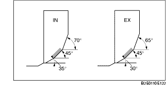

INSPECTION/RÉPARATION DU SIÈGE DE SOUPAPE
B3E011010102201
1. Mesurer la largeur de contact du siège.
-
• Si la valeur mesurée se situe en dehors de la plage de valeurs spécifiées, rectifier le siège de soupape à l'aide d'une fraise pour siège de soupape à 45°, et/ou rectifier le collet de soupape.
-
Largeur standard :
-
1,2-1,6 mm {0,048-0,062 in}
2. Vérifier que la position du siège de soupape est au centre de la surface de soupape.
-
(1) Si la position d'appui est trop à l'extérieur, corriger le siège de soupape à l'aide d'une fraise à 70° (IN) ou 65° (EX), et d'une fraise à 45°.
-
(2) Si la position d'appui est trop à l'intérieur, corriger le siège de soupape à l'aide d'une fraise à 30° (IN) cutter, and a 0° (EX), et d'une fraise à 45°.

3. Vérifier l'enfoncement du siège de soupape. Mesurer la longueur de saillie (dimension L) de la tige de soupape.
-
• Si le résultat n'est pas conforme aux spécifications, remplacer la culasse.
-
Dimension standard L :
-
IN : 40,64-42,24 mm {1,600-1,662 in}
-
EX : 40,50-42,10 mm {1,595-1,657 in}